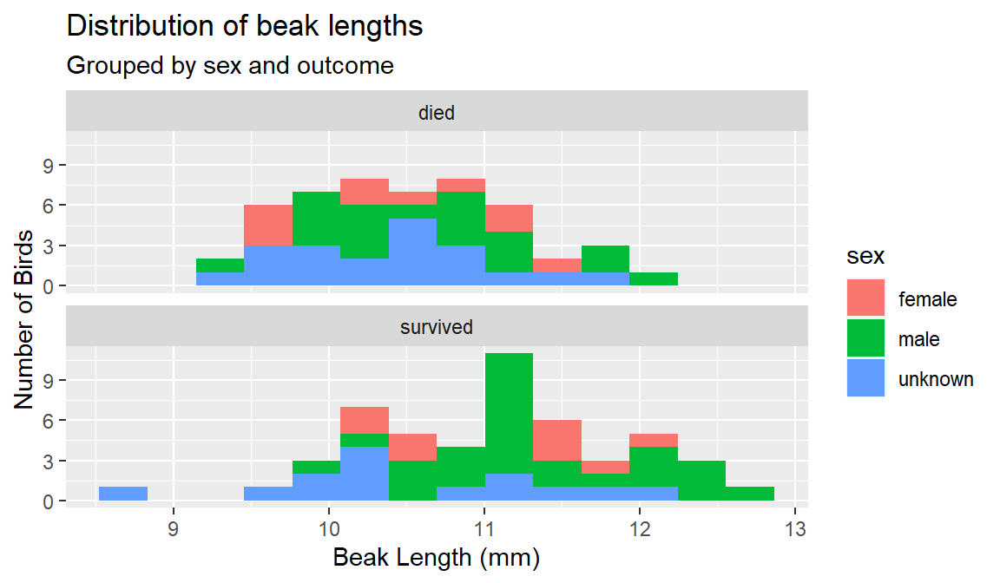

Data Lab 2
In this lab you will apply what you learned in Data Lab 1 to analyze the fast plant data generated by the class this semester.
See the lab Artificial Selection in Fast Plants on page 7 of your Lab Manual for an introduction to the concepts and a description of the study design.
To summarize, the question you are trying to answer is:
Does the number of trichomes on Fast Plants (Brassica rapa) plants vary between the F0 (parent) and F1 (offspring) generations.
The figures and results you produce in this Data Lab 2 are due by the end of your lab. Upload a Word document to your lab (not lecture) D2L page under Assessment > Assignments > Data Lab 2.
This assignment will also form the RESULTS section of your Fast Plant Lab Report, which is due by the end of lab Wednesday, November 6th (Wednesday lab sections) or Thursday, November 7th (Thursday lab sections). The template for that report is available here and in the ClassShare Handouts folder.
Your assignment
Your objective in this lab is to generate the results that will answer the question above, specifically by producing the following:
- A histogram showing how the distribution of numbers of trichomes varied between generations. It should also show which plants in the F0 generation were selected for breeding and which were not.
- A bar chart showing how the mean number of trichomes varied between generations. Include a 95% confidence interval around the means.
- Figure legends describing these two figures.
- A paragraph describing the results of the analysis, including the results of a t-test to test for a difference between the means.
To answer the question, you should:
- Connect to the ClassShare drive.
- Open RStudio and create a new project in your ClassShare folder.
- Download the Fast Plant data (see Fast plant data below) or copy it from the ClassShare Handouts folder.
- Install the tidyverse package.
- Create a new R script.
- Copy the code from the Data Lab 1 beak length script → [click link] and paste it into the new script.
- Modify the new script for use with the fast plant data. See the Copy + Paste Cheat Sheet handed out in lab for help figuring out what replacements to make.
- Plot a histogram with facets for each generation (F0 and F1)
- Instead of setting the fill color to vary by generation, set it to vary by whether or not the plants were selected for breeding.
- Remove the line
guides(fill = FALSE) +to show the fill color legend. - For help, see A new variation below.
For a reminder on how to perform the analysis and writing steps, see Data Lab 1, Part 4. Bluestem Data Assignment →.
When you are finished:
- Paste your figures into a Word document, add figure legends and a Results paragraph, and upload it to your lab D2L page under Assessments > Assignments > Data Lab 2.
- Make sure your project is saved in your ClassShare folder so you can access it again later.
This assignment is due by the end of your lab.
Your Fast Plant Lab Report is due by the end of lab Wednesday, November 6th (Wednesday lab sections) or Thursday, November 7th (Thursday lab sections). If you need additional time, make sure to check with your lab instructor and show them the progress you have made.
See the Scientific Writing page to download the lab report template, or copy it from the ClassShare Handouts folder.
Fast plant data
You can either copy the fast plant data from the ClassShare Handouts folder or download it here:
Each row in the dataset represents an individual plant.
The variables in the dataset are:
- generation. The generation the plant belonged to? (values include
"F0"or"F1") - trichome_count. The number of trichomes the plant had. (values are numeric integers)
- selected. For the F0 generation, was the individual plant selected for breeding? (values include,
"yes","no", or"NA"if the plant was from the F1 generation)
A new variation
In the finch and bluestem analyses, you created a histogram for each group and also colored the histograms differently for each group.
In theory, there is no reason you can’t use a different variable to color the histograms.
For example, here is the finch data colored by sex:
# histogram of beak length, grouped by survival, colored by sex
ggplot(
data = finches,
mapping = aes(x = beak_length,
fill = sex) # color the boxes by gender
) +
geom_histogram(bins = 14) +
facet_wrap(~ outcome, ncol = 1) + # put each outcome in its own panel
labs(
title = "Distribution of beak lengths",
subtitle = "Grouped by bird sex and survival outcome",
x = "Beak Length (mm)",
y = "Number of Birds"
)
For your current assignment, put each generation of plants on its own panel, and set the fill color of the columns by whether the plants were selected for breeding or not.
Remove the line guides(fill = FALSE) + to show the fill color legend.
In your figures, do not use subtitles and set your titles to say "Figure 1." and "Figure 2.".
For example: